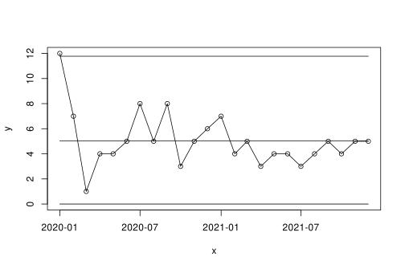
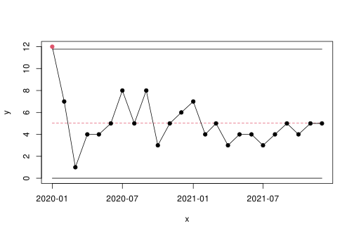

Chapter 8 Highlighting Freaks, Shifts, and Trends
In Chapter 7 we calculated control limits for commonly used control charts. These limits define the boundaries of natural common cause variation. Data points falling outside the control limits – freaks – are therefore signals of special cause variation, that is, unexpected change caused by something outside the usual system.
Control limits are designed primarily to detect relatively large, and possibly transient, changes in a process. However, as discussed in Chapter 4, smaller but sustained changes in the form of shifts or trends may remain undetected by the control limits for long periods. For this reason, a number of supplementary tests, or rules, have been proposed. To balance the need for timely detection of special causes against the risk of false alarms, we recommend using the 3-sigma rule to identify freaks and the two runs rules – unusually long runs and unusually few crossings – to identify shifts and trends.
In this chapter, we will improve the spc() function so that it automatically highlights special cause variation in the form of freaks, shifts, and trends.
8.1 Introducing the cdiff data set
The [Clostridioides difficile infections] data set contains 24 monthly observations of hospital-acquired C. diff. infections from an acute care hospital.
# read data from file
cdiff <- read.csv('data/cdiff.csv',
comment.char = '#',
colClasses = c('Date',
'integer',
'integer'))
# calculate centre line and control limits
cdiff <- within(cdiff, {
cl <- mean(infections)
lcl <- pmax(0, cl - 3 * sqrt(cl)) # censor lcl at zero
ucl <- cl + 3 * sqrt(cl)
})
# print the first six rows of data
head(cdiff)## month infections risk_days ucl lcl cl
## 1 2020-01-01 12 19801 11.77776 0 5.041667
## 2 2020-02-01 7 18674 11.77776 0 5.041667
## 3 2020-03-01 1 15077 11.77776 0 5.041667
## 4 2020-04-01 4 12062 11.77776 0 5.041667
## 5 2020-05-01 4 14005 11.77776 0 5.041667
## 6 2020-06-01 5 14840 11.77776 0 5.041667Figure 8.1 shows these data plotted with the spc() function. We can see that one data point (#1) lies above the upper control limit. Looking more closely, we also find an unusually long run of 11 data points below the centre line (#14–#24), and the line crosses the centre line only 7 times. Thus, in addition to the freak, there is also a shift in the data, not large enough to break the control limits, but sustained enough to trigger the runs rules.

Figure 8.1: C control chart of Clostrioides difficile infections
Notice that the lower control limit has been censored at zero, even though its exact value is negative. This is done purely for cosmetic reasons. Since the data themselves cannot take negative values, it makes little sense to display negative control limits. For the same reason, P chart limits are often censored at 0 and 1 (or 100%).
To help us identify special cause variation more easily, we now improve the spc() function.
8.2 An improved spc() function
The revised version of the spc() function includes a number of changes.
First, it imports the function runs.analysis() from a separate R script in order to test for unusually long runs and unusually few crossings. This function is displayed at the end of this chapter.
Second, if no centre line is supplied, the function uses the median of the data.
Third, it creates a logical vector identifying points that fall outside the control limits.
Fourth, it performs runs analysis to check for sustained shifts and trends.
Finally, it changes the plotting so that the plot is first created empty, after which the centre line, control limits, and data are added in a way that allows special cause signals to be highlighted visually.
spc <- function(
x, # x axis values
y = NULL, # data values
cl = NULL, # centre line
lcl = NA, # lower control limit
ucl = NA, # upper control limit
... # other parameters passed to the plot() function
) {
# load runs analysis function from R script
source('R/runs.analysis.R')
# if y is missing, set y to x and make a sequence for x
if (is.null(y)) {
y <- x
x <- seq_along(y)
}
# if cl is missing use median of y
if (is.null(cl))
cl <- median(y, na.rm = TRUE)
# repeat line values to match the length of y
if (length(cl) == 1)
cl <- rep(cl, length(y))
if (length(lcl) == 1)
lcl <- rep(lcl, length(y))
if (length(ucl) == 1)
ucl <- rep(ucl, length(y))
# find data points outside control limits (freaks)
sigma.signal <- y < lcl | y > ucl
sigma.signal[is.na(sigma.signal)] <- FALSE
# check for sustained shifts and trends using runs analysis
runs.signal <- runs.analysis(y, cl)
# make empty plot
plot(x, y,
type = 'n',
ylim = range(y, cl, lcl, ucl, na.rm = TRUE),
...)
# add centre line, coloured and dashed if shifts or trends were identified by
# the runs analysis
lines(x, cl,
col = runs.signal + 1,
lty = runs.signal + 1)
# add control limits
lines(x, lcl)
lines(x, ucl)
# add data line and points, colour freak data points (outside control limits)
lines(x, y)
points(x, y,
pch = 19,
col = sigma.signal + 1)
}
Figure 8.2: Improved control chart with visual clues to highlight special cause variation
The chart now makes it much easier to see immediately whether special cause variation is present (Figure 8.2). Freak data points are shown in red, and the centre line turns red and dashed when the runs analysis identifies unusually long runs or unusually few crossings.
It is important to remember, however, that the chart itself does not explain the cause of the signal. Interpretation still depends on people with a good understanding of both the process and the data.
8.3 Highlighting special cause variation in short
In this chapter, we improved the spc() function so that it automatically highlights signals of special cause variation by using visual cues to signal freaks, shifts, and trends.
In the next chapter, we will improve the spc() function further so that it can automatically aggregate data and calculate control limits.
R function for runs analysis
runs.analysis <- function(y, cl) {
# trichotomise data according to position relative to CL
# -1 = below, 0 = on, 1 = above
runs <- sign(y - cl)
# remove NAs and data points on the CL
runs <- runs[runs != 0 & !is.na(runs)]
# find run lengths
run.lengths <- rle(runs)$lengths
# find number of useful observations (data points not on CL)
n.useful <- sum(run.lengths)
# find longest run above or below CL
longest.run <- max(run.lengths)
# find number of times adjacent data points are on opposite sides of CL
n.crossings <- length(run.lengths) - 1
# find upper limit for longest run
longest.run.max <- round(log2(n.useful)) + 3
# find lower limit for number of crossing
n.crossings.min <- qbinom(0.05, n.useful - 1, 0.5)
# return result, TRUE if either of the two tests is true, otherwise FALSE
longest.run > longest.run.max | n.crossings < n.crossings.min
}